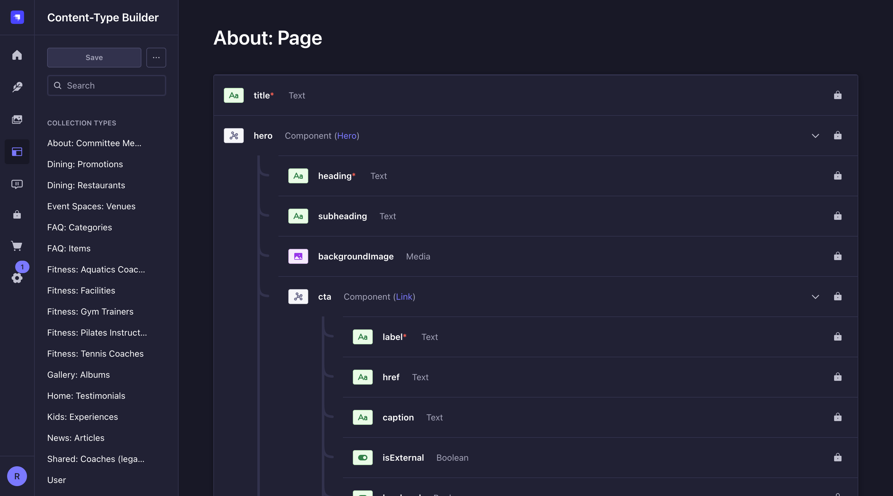
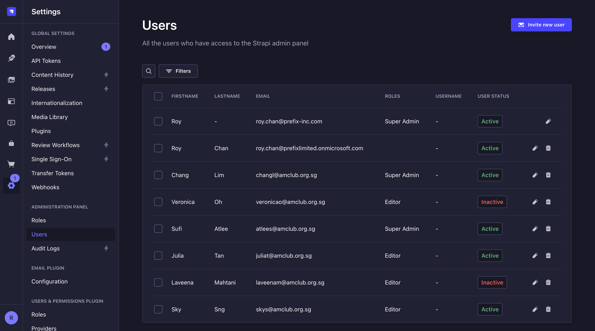
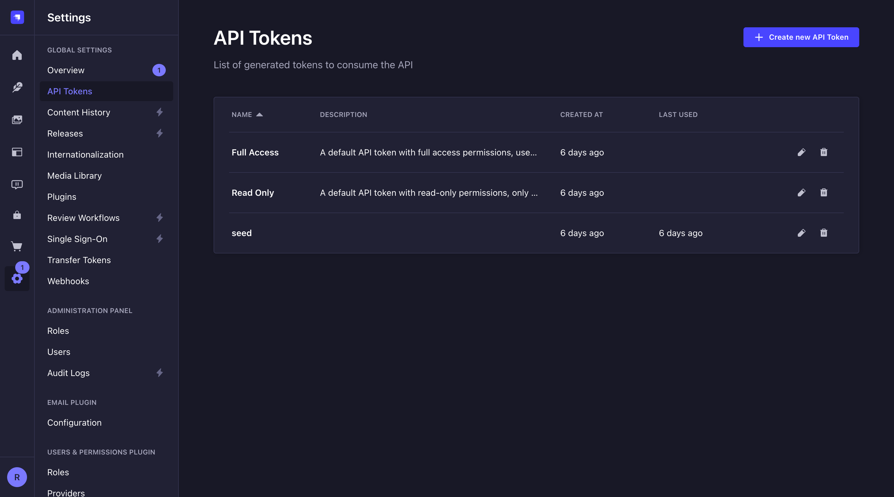
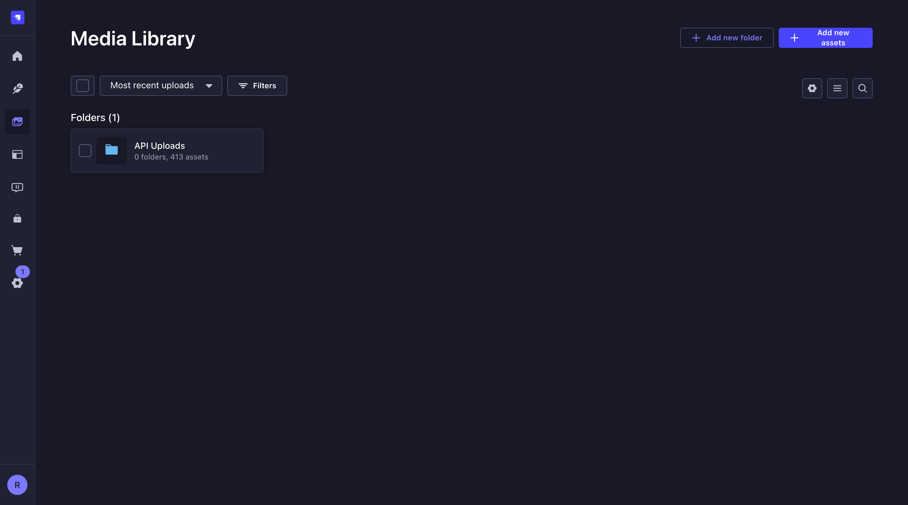

Technical Admin Guide
The American Club Website
Architecture, environments, deployment, CMS internals, content seeding, and operations runbook for the amclub-website monorepo. For day-to-day content editing, hand editors the CMS User Guide.
1. Architecture
| Layer | Technology |
|---|---|
| Frontend | React 19 + Vite + Tailwind CSS v4 + TypeScript (strict), React Router v7 |
| CMS | Strapi v5 (currently 5.46.x), PostgreSQL 16 in deployed envs, SQLite locally |
| Hosting | Azure Container Apps — one all-in-one container per environment (nginx + Strapi + built frontend) |
| Storage | Azure Blob Storage for media (amclub<env>data / container media) |
| IaC | Pulumi (TypeScript), state in Azure Blob backend (azblob://state) |
| CI/CD | GitHub Actions (ci.yml + deploy.yml) |
| Auth (admin) | Email/password + Microsoft Entra ID SSO via strapi-plugin-sso |
| Chatbot | ElevenLabs agent fed by a custom Strapi plugin syncing published content to its knowledge base |
/api). /uploads/* is reverse-proxied by nginx to the blob container, so media
serves from the site origin, not the raw blob host. DNS & TLS termination details are in §11.Request routing (inside the container)
infra/docker/nginx.conf routes / → built SPA, /api/* → Strapi (:1337),
/admin/* → Strapi admin, /strapi-plugin-sso/* → SSO endpoints,
/uploads/* → Azure Blob container. The deployed frontend
always talks to its own origin (/api) — never a hardcoded Strapi URL.
DESIGN.md (root) holds the design tokens; SPECS.md (root) maps every page,
component, and CMS binding. Read both before changing anything visual or structural.
The Framer prototype is at tactesting.framer.website.
2. Environments & Branching
Three long-lived branches map 1:1 to environments. All work lands on dev first;
promotion is via PR dev → uat → main. Never push directly to uat/main,
never force-push them.
| Branch | Environment | Public URL | Admin | Azure subscription / tenant |
|---|---|---|---|---|
dev |
DEV | dev.amclub.org.sg | dev.amclub.org.sg/admin | Prefix subscription (legacy tenant) |
uat |
UAT | uat.amclub.org.sg | uat.amclub.org.sg/admin | Client "Website" subscription (tenant 8137d2b4…) |
main |
PROD | amclub.org.sg | amclub.org.sg/admin |
uat/main.Check what's queued for promotion:
git log --oneline origin/uat..origin/dev # ready for UAT
git log --oneline origin/main..origin/uat # ready for PRODAPI base URLs, Strapi origins, feature flags, and analytics IDs come from env vars
(VITE_* at build time for the frontend; Container App settings at runtime for Strapi).
Never hardcode a single environment's URL in source.
Content edited live on prod is logged under content-updates/ (see log.md there) so it
can be replayed onto dev seed scripts later. Don't edit dev content while doing prod content work.
3. Repository Layout
amclub-website/
├── cms/ Strapi v5 project (APIs, plugins, providers, config)
├── frontend/ React + Vite + Tailwind SPA
├── infra/ Pulumi IaC (index.ts, Pulumi.<env>.yaml, README.md)
├── infra/docker/ Container entrypoint.sh + nginx.conf (Dockerfile is at repo root)
├── scripts/ seed-*.mjs / patch-*.mjs content scripts + seed-helpers.mjs
├── media/ ALL source assets, mirroring site structure (media/about/, media/dining/…)
├── content-updates/ Audit log of manual prod content edits (for replay)
├── docs/ media-storage.md · strapi-patterns.md · troubleshooting.md · admin-guide/ (this)
├── .github/workflows/ ci.yml · deploy.yml
├── DESIGN.md Design tokens (Stitch DESIGN.md spec)
└── SPECS.md Page/component/CMS-binding source of truth- Conventions: TypeScript strict, no
any; named exports; 2-space indent, single quotes; conventional commits (feat:,fix:…). - Asset naming: lowercase-with-hyphens only. Rename legacy spaced/uppercase files when touched and update every reference.
4. The Strapi CMS
Content types
~19 collection types + ~21 single types live under cms/src/api/<type>/content-types/<type>/schema.json.
Admin display names follow the <Section>: <Entity> convention (e.g.
Dining: Restaurants, Global: Header) — set in info.displayName only.
Never change singularName/pluralName; they define API routes.

dev and deployed.Edit schema.json (or use the builder against a local dev Strapi), commit to
dev, let CI deploy. Also update content-inventory.json and SPECS.md
in the same commit. Adding fields via the deployed admin is not possible (production mode) and would be lost anyway.
Plugins & customisations
| Customisation | Location | What it does |
|---|---|---|
upload-azure-folders provider |
cms/providers/upload-azure-folders/ (linked via file: dep) |
Wraps the Azure upload provider; honours a path form-data field so blobs land in
folder hierarchies. Must be COPYed in both Dockerfile stages. |
upload-path-to-folder middleware |
cms/src/middlewares/upload-path-to-folder.ts, registered after strapi::body
in cms/config/middlewares.ts |
Mirrors blob paths into Media Library folders on POST /api/upload. |
| Expiry filter | cms/src/utils/expiry-filter.ts + event / dining-promotion controllers |
Hides expired events/promos from listing endpoints (fallback field e.g. date, explicit
override expiredAt). Skipped when the query targets a slug/documentId so detail pages still resolve. |
elevenlabs-chatbot local plugin |
cms/src/plugins/elevenlabs-chatbot/ |
Syncs published entries to the ElevenLabs agent knowledge base; hourly cron
(expiryKbSweep in cms/src/index.ts, rule 0 * * * *) unsyncs expired rows.
Needs ELEVENLABS_API_KEY / ELEVENLABS_AGENT_ID. |
clone-entry local plugin |
cms/src/plugins/clone-entry/ |
Adds the CLONE panel in the entry editor (new draft, -copy slug suffix; media/relations linked). |
strapi-plugin-sso |
npm dep, configured in cms/config/plugins.ts |
"Continue with Microsoft" login via Entra ID (see §5). |
Media fields newly added to existing single types/components don't persist via REST PUT on this
project's local DB (e.g. header.menuIcon). Frontend fallbacks are used until proper migrations land —
see docs/strapi-patterns.md.
ElevenLabs chatbot sync
The on-site assistant is an ElevenLabs Conversational AI agent. Its answers are grounded in a
knowledge base (KB) that the local elevenlabs-chatbot plugin keeps in step with published CMS
content. The plugin lives in cms/src/plugins/elevenlabs-chatbot/; host config is in
cms/config/plugins.ts.
| Mechanism | Detail |
|---|---|
| Publish-time sync | autoSyncOnPublish: true (env ELEVENLABS_AUTOSYNC). A lifecycle hook subscribes to
all api::* models and, on publish/update of an allow-listed type,
renders the entry to Markdown and upserts it as a KB document. |
| Allow-list | DEFAULT_ELEVENLABS_CONTENT_TYPES in cms/config/plugins.ts (all page singletons
incl. the membership sub-pages + events, news, restaurants, event spaces, fitness facilities,
kids experiences, dining promotions, committee members, FAQ items, testimonials, gallery albums).
The plugin Settings page in /admin overrides this allow-list at runtime once
saved. Keep the list in step with content-type renames — a stale UID (e.g. the old
api::venue.venue) fails silently and that type simply never syncs. |
| Document naming | KB docs are prefixed am-club: (ELEVENLABS_DOC_PREFIX) so the sweep can identify
and prune documents it owns without touching manually-added KB entries. The per-entry key is the
slug, falling back to documentId — never the row id, which
Strapi v5 regenerates on every publish (keying on it duplicated singleton docs each republish until fixed
on 10 Jul 2026). Attached files become child docs named <owner>:file:<name>. |
| Markdown rendering | markdown.ts renders each entry with a titled source link
(Source: [Page Title](url)) repeated at the end of every section — RAG retrieves
chunks, so a single top-of-doc link never reaches the model. Rendered fields: summary scalars
(name, capacity, location, phone, email…), string/text/richtext
fields over 30 chars, components and dynamic zones. Citation URLs come from real SPA route maps in
sync.ts (COLLECTION_ROUTES/SINGLETON_ROUTES). |
| RAG indexing | Creating a KB doc is not enough — each doc needs a RAG index
(POST /v1/convai/knowledge-base/{id}/rag-index, then poll status via GET).
Index sequentially; parallel POSTs spawn duplicate attempts. Each ElevenLabs account has a
RAG storage quota (20 MB on the Club account; the ~2 MB figure was the old agency plan) — rag_limit_exceeded means quota, a
plain failed at 100% usually means corrupt doc content. |
| Expiry sweep (cron) | 5 0 * * * nightly at 00:05 Asia/Singapore (expiryKbSweep in
cms/src/index.ts) unsyncs events / dining promotions whose date has passed — keeps the bot
from citing stale events. "Today" is computed in SGT, not UTC: containers run UTC, so an ISO date would
keep yesterday's events alive until 8am Singapore. |
| Excluded documents | Plugin Settings → Excluded documents. One pattern per line, matched case-insensitively
against the upload's file name and its URL; * is a wildcard. A matching file is
never pushed, and any doc a previous sync created for it is deleted on the next sync of its owner page —
so the denylist is retroactive.
Why it exists: ElevenLabs' PDF extractor flattens tables — a class timetable loses every row/column association and the agent then confabulates confident wrong pairings (verified on prod, 11 Aug 2026, gym class schedule). Text-only PDFs (menus, policies, forms) extract fine, so this is a targeted denylist, not a blanket "no PDFs" rule. |
| Teamup calendar sync | Plugin Settings → Teamup calendar. Pulls a rolling window
(days before / days after today, SGT) from the Teamup API and pushes it to the KB.
Optionally whitelist subcalendars — leave all unticked to pull everything.
Repeating events are collapsed to one document per series: a 60-day window returns ~1,900 occurrences but only ~230 series, so per-occurrence docs would flood the KB and bury one-off events. Cadence is derived from the actual gaps between occurrences (weekly / fortnightly / monthly / "every day"); when the spacing fits no clean pattern the real dates are listed instead of a cadence being invented. Sessions with differing times are listed individually rather than collapsed to one misleading time. Past events expire automatically: each run recomputes the window and deletes any Teamup doc that fell out of it — no separate cron needed. Use Preview first: it reports the window, event/series counts and sample rendered documents without writing anything. |
| Manual re-sync | The "Sync to ElevenLabs" panel on a published entry (EditViewSidePanel) forces an
immediate upsert. Bulk re-sync is available from the plugin Settings page. |
| Widget config | The public widget reads agent/config from the plugin's public-config endpoint;
ELEVENLABS_AGENT_ID is public, ELEVENLABS_API_KEY is a Container App secret. |
ELEVENLABS_API_KEY (secret) + ELEVENLABS_AGENT_ID (GitHub environment
variable) per environment → injected by Pulumi. TEAMUP_TOKEN (secret, optional) is
required only when Teamup sync is enabled; the calendar key is not secret and is set on the plugin
Settings page. A missing token does not fail the deploy — Teamup sync simply errors when run. If unset, the plugin no-ops gracefully (no sync, no
widget) — useful for local dev. Each environment points at its own ElevenLabs agent so UAT edits don't
pollute the prod KB.
dev uses the agency's original ElevenLabs account (agent American Club Agent - Dev,
agent_2501kr…) for internal testing. uat and prod use the
Club's own ElevenLabs account (agents amclub.org.sg - uat agent_6001kv… and
amclub.org.sg - prod agent_8501kw…) — so the two environments need the Club account's
API key, and dev needs the old one. Keep this in mind when rotating ELEVENLABS_API_KEY: it is a
different key for dev vs uat/prod. Prod's KB is the single source of truth; UAT may lag behind it.
The agent system prompt is versioned at agent/prompt.md — datetime-aware (the widget injects live
Singapore date/time as dynamic variables each session), grounded-in-KB rules, department contacts, and tone
aligned with reference/TAC_Master_FAQ_Repository.xlsx. Apply prompt changes to all agents
via the ElevenLabs API/console after editing the file. Manually attached KB docs (no am-club:
prefix, e.g. manual:faq-master-repository) are preserved by the sync — it only manages docs it
owns.
Citations pipeline (page-title chips)
Three layers cooperate so every factual chatbot answer ends with numbered, page-titled source chips:
- KB docs carry
Source: [Page Title](url)lines in every section (markdown.ts; the manual FAQ docagent/faq-kb.mdcarries one per Q&A). - The prompt makes the source link a required response-structure step and tells the agent to
copy the titled markdown link verbatim (
More details: [Types & Joining Fees](…)). - The widget (
ChatbotWidget.tsx) lifts those lines into superscript footnote markers + chips labelled with the page title; internal links open behind the chat panel via SPA navigation, uploaded documents get a humanized filename label ("Capacity Chart (PDF)"), external links open a new tab.
All three agents run claude-sonnet-4-6. This is deliberate: gemini-2.5-flash drops the
per-turn citation rule after the first answer in multi-turn chats regardless of prompt wording (tested
1/5 → 2/5 after prompt tightening; Claude holds 5/5). If cost ever matters, trial
claude-haiku-4-5 before anything else — and re-run the eval
(scripts/eval-agent-faq.py) after any model change.
Full KB rebuild runbook
Needed after a plugin change that alters rendered markdown (all content hashes change), or when the KB is suspected stale. Order matters:
- Sweep — either the plugin Settings page → "Sync All" (needs an admin session),
or a no-op PUT of every allow-listed published entry via the content API with the seed token (fires
the publish lifecycle; scripts follow the pattern in
scripts/— sweep scripts are env-guarded so a dev script cannot hit UAT). - Purge stale generations — any doc named
am-club:*:id-<n>after the sweep is a pre-fix leftover: detach from the agent, then delete. One dead doc id in the agent's KB list makes the whole attach PATCH 404, so the plugin validates per-doc with direct GETs (never the lagging search index). - Re-index sequentially — priority order (restaurants and page singletons first, gallery/news tail last). A changed doc = a new doc = its RAG index must be rebuilt; deleting the old doc frees its quota as you go.
- Verify live — ask the deployed chatbot a KB-dependent question ("When is The 2nd Floor open today?") and confirm the answer carries a titled citation chip.
5. Admin Users, Roles & SSO

- Invite flow: Settings → Users → Invite new user → assign role → send the registration link. Accounts show Inactive until the invite is accepted.
- Roles: Super Admin (everything), Editor (create/edit/publish all content), Author (own content only). Content staff = Editor.
- SSO: Entra app
amclub-strapi(client ida4f530c4…). Redirect URI is derived fromPUBLIC_SITE_URLper environment, so each env needs its redirect registered on the app. Configured via GH environment secretsAZUREAD_TENANT_ID,AZUREAD_OAUTH_CLIENT_ID,AZUREAD_OAUTH_CLIENT_SECRET,AZUREAD_SCOPE— all optional; if unset, the env falls back to password login only.
If USE_WHITELIST: true is enabled with an empty whitelist, SSO logins are rejected. Recover via
password login → /admin/settings/strapi-plugin-sso → add emails, or revert the flag and redeploy.
Details in docs/troubleshooting.md.
6. API Tokens

seed token is what the content scripts authenticate with.- Tokens are per environment and shown only once at creation — store them in the matching
cms/.env.seed.<env>file (git-ignored). Never commit a token. - The
seedtoken needs full content + upload permissions for the seed scripts to upsert entries and upload media. - Public reads from the frontend do not use a token — public role permissions on each content type's
find/findOnegovern that.
7. Seed Scripts & Content Ops
Pre-release content lives in seed scripts, not in ad-hoc /admin edits. Every piece of
initial copy, image, or PDF must be reproducible against a fresh Strapi by re-running the scripts in
scripts/.
Conventions
seed-<area>.mjs— idempotent upserts for a page/collection (safe to re-run; matches by slug/key).patch-<date>-<topic>.mjs— dated one-off fixes, kept for audit/replay.seed-helpers.mjs— sharedapi(),uploadFile(), slugify, and theTOP_LEVEL_BLOB_MAPthat mapsmedia/<section>/…to blob paths.- Auth/config from
cms/.env.seed.<env>:STRAPI_BASE_URL+STRAPI_API_TOKEN.
# run a seed against an environment
node scripts/seed-events.mjs --env=uat # most scripts accept --env / --dry-run
# warm the container first if it scaled to zero (avoids mid-run fetch failures)
curl -sS "$BASE/api/upload/files?pagination[pageSize]=1" > /dev/nullRules
- If you enter content ad-hoc in
/admin, port it back into the matching seed script in the same commit. - Manual prod content edits are logged in
content-updates/(entry files +log.md) for later replay onto dev. - Assets referenced by seeds live under
media/mirroring site structure; delete orphans when replacing assets.
8. Media Storage

path field is supplied).- Blob layout: storage account
amclub<env>data, containermedia(public read at Blob level), URLs likehttps://amclubuatdata.blob.core.windows.net/media/uploads/<file>. - Upload flow: Strapi upload → custom
upload-azure-foldersprovider → blob path from thepathform-data field →upload-path-to-foldermiddleware mirrors the path into Media Library folders. - CORS: admin thumbnails require a GET/HEAD/OPTIONS CORS rule on the blob service
(set via Pulumi
BlobServiceProperties; one-off fix viaaz storage cors add). - Full details and incident history:
docs/media-storage.md.
9. CI/CD
ci.yml — every push/PR to dev/uat/main
- CMS:
npm run build - Frontend:
npm run typecheck && npm run lint && npm run build - Infra:
npx tsc --noEmit
deploy.yml — on push to a branch, after CI
- Maps branch → GitHub environment (
dev/uat/prod) and pulls that environment's secrets. - Builds the all-in-one Docker image (multi-stage: cms-builder → frontend-builder → runtime;
cms/providers/copied in both CMS stages). - Runs
pulumi upagainst the matching stack withPUBLIC_SITE_URLauto-set per branch, plus ElevenLabs + Entra SSO vars. The image is built insidepulumi up(@pulumi/docker-build) and pushed to the env's ACR asamclub-app:latest.
The image builds with noCache: true (see infra/index.ts) — deploys are slower but
guaranteed fresh, after a stale-layer bug once shipped a frozen admin bundle. CMS_BUILD_NONCE
(= commit SHA) is kept in the Dockerfile so caching can be re-enabled safely later.
| Secret / var | Purpose |
|---|---|
AZURE_CREDENTIALS | Service principal JSON for the target subscription |
AZURE_STORAGE_ACCOUNT / AZURE_STORAGE_KEY |
Pulumi state backend (azblob://state). dev = pulumistateb6e87494 (legacy tenant);
uat + prod = pulumistate56994511 (client tenant) |
ELEVENLABS_API_KEY / ELEVENLABS_AGENT_ID | Chatbot knowledge-base sync |
AZUREAD_* | Entra SSO (optional — password fallback if unset) |
The new Container App revision may have failed its probes and traffic stayed on the old one. Check
az containerapp revision list / az containerapp logs show —
recipe in §14.
10. Infrastructure (Pulumi / Azure)
One Pulumi stack per environment (infra/Pulumi.<env>.yaml), all resources in Southeast Asia.
Per stack:
| Resource | Name pattern | Notes |
|---|---|---|
| Resource group | amclub-<env>-rg | |
| Container registry | amclub<env>acr | Basic SKU |
| PostgreSQL Flexible Server | amclub-<env>-pg | PG16, Standard_B1ms, 32 GB, 7-day backups |
| Storage account | amclub<env>data | Blob container media (public Blob read) + legacy file share |
| Container App | amclub-<env>-app | 0.5 vCPU / 1 GB, scaling fixed at min=max=1 — the container is stateful
(Strapi + nginx in one image, uploads on an Azure Files volume at /data), so it must not scale
horizontally. Keep ≥1 to avoid cold-start seed failures. |
| Container Apps env + Log Analytics | amclub-<env>-env | 30-day log retention |
- App secrets (DB password, Strapi keys/salts/JWT secrets) are auto-generated by Pulumi per deployment.
- Stack outputs:
appUrl,postgresHost,containerRegistryLoginServer,resourceGroupName. - Approx. running cost ≈ US$28/month per environment.
- Direct DB access: port 5432 is blocked from local machines — use Azure Cloud Shell or go through the content API instead.
- Setup walkthroughs and multi-subscription patterns:
infra/README.md.
11. DNS & Custom Domains (Cloudflare → Azure)
DNS for amclub.org.sg is hosted at Cloudflare. Cloudflare resolves each hostname to
the Azure Container Apps Environment static IP and (optionally) proxies the traffic. Azure
terminates TLS at the Container App ingress with a managed certificate per hostname, bound via
Pulumi. There is no separate web server or load balancer to manage.
infra/index.ts note on
containerEnvStaticIp.DNS records in Cloudflare
Per hostname there are two records — an address record and an Azure ownership-verification record:
| Type | Name | Value | Proxy |
|---|---|---|---|
A | amclub.org.sg / www / uat / dev |
Container Apps Environment static IP — Pulumi output containerEnvStaticIp |
Proxied (orange) in steady state; DNS-only (grey) during cert issuance |
TXT | asuid.<host> (e.g. asuid.uat, asuid for apex) |
Pulumi output customDomainVerificationId for that environment |
n/a |
# pull the two values Cloudflare needs, per environment
pulumi stack select <dev|uat|prod>
pulumi stack output containerEnvStaticIp # → A record value
pulumi stack output customDomainVerificationId # → asuid TXT valueLive hostname → IP map
The zone's nameservers are hunts.ns.cloudflare.com / tori.ns.cloudflare.com.
Current bindings (verified July 2026 — always re-check with pulumi stack output or
dig before relying on these):
| Env | Public hostname | A record → static IP | Container App ingress FQDN | Storage account |
|---|---|---|---|---|
| prod | amclub.org.sg, www.amclub.org.sg | 20.195.32.232 |
amclub-prod-app.ambitiouscliff-0c553c6f | amclubproddata |
| uat | uat.amclub.org.sg | 20.43.173.85 |
amclub-uat-app.greenglacier-d9f69a0a | amclubuatdata |
| dev | dev.amclub.org.sg | 104.43.55.4 |
amclub-dev-app.mangorock-5b6aa4c0 | amclubdevdata |
The American Club's internal office network resolves amclub.org.sg hostnames through the Club's
own internal DNS servers, where the records were duplicated during the Cloudflare migration.
Changes made in Cloudflare do not propagate to that internal DNS. If a static IP ever changes
(an environment is recreated, moved to another subscription/region, or re-provisioned by Pulumi), the Club's IT
team must manually update the internal DNS records — otherwise devices on the Club network keep
resolving the old IP while the public internet works fine. Classic symptom: "the site works on mobile data
but not on Club Wi-Fi." After any IP change: update Cloudflare, then notify Club IT with the new IP(s) from
the table above.
/api+/admin to Strapi on localhost, and reverse-proxies /uploads/*
from that environment's blob storage account. dev lives in the Prefix subscription; uat and prod in the Club's
Website subscription.How the binding is wired (Pulumi)
Custom domains are declared in each stack's config and bound to the Container App ingress in
infra/index.ts (SNI-enabled, referencing a managed certificate by name):
# infra/Pulumi.prod.yaml
amclub-website:customDomains:
- name: amclub.org.sg
certName: amclub.org.sg-amclub-p-260518090805
- name: www.amclub.org.sg
certName: www.amclub.org.sg-amclub-p-260519065509Azure Container Apps ingress uses PUT (full-replace) semantics, not PATCH. If a hostname isn't in
the desired-state body, every pulumi up strips it — the site loses its custom domain mid-deploy.
Always add a new hostname to Pulumi.<env>.yaml before deploying; never bind domains
only in the portal. (A prior ignoreChanges workaround failed — see infra/index.ts history.)
Managed TLS certificates
- One Azure-managed certificate per hostname, created in the Container Apps Environment.
Naming pattern
<host>-amclub-<env-initial>-<timestamp>. - List / look up the
certNameto put in stack config:az containerapp env certificate list -g amclub-<env>-rg -n amclub-<env>-env -o table - Azure auto-renews managed certs. Renewal keeps the same cert resource, so
certNamein stack config does not change on renewal.
Runbook — add a new hostname (e.g. a vanity subdomain)
- In Cloudflare, add the
Arecord (→containerEnvStaticIp) and theasuid.<host>TXT(→customDomainVerificationId). Set the A record DNS-only (grey cloud) for now so Azure's validation reaches the origin. - Create the managed cert + add the hostname in Azure (portal: Container Apps Environment → Certificates, or via
az containerapp hostname addthenaz containerapp env certificate create). Wait for validation to succeed. - Add
{ name, certName }toinfra/Pulumi.<env>.yaml→customDomains, commit todev, promote as usual so the binding is captured in IaC. - Run the deploy (or
pulumi up) and confirm the SNI binding. - Re-enable the Cloudflare proxy (orange cloud) and set SSL/TLS mode → Full (Strict) (Azure presents a valid public cert, so Strict is correct).
Azure's managed-cert issuance/renewal validates over HTTP/TLS to the hostname. With the Cloudflare proxy on, validation can fail because Cloudflare intercepts the request. If a new cert won't issue, temporarily switch the record to DNS-only (grey), let Azure validate, then re-proxy. Renewals of existing certs are usually fine proxied, but keep this in mind if a renewal stalls.
SSL/TLS: Full (Strict). Always Use HTTPS: on. Apex: use an A
record to the static IP (not CNAME flattening). Keep Cloudflare caching conservative for /admin and
/api (bypass) so CMS editing and API responses aren't cached; static SPA assets are safe to cache.
12. Frontend Integration
- API client:
frontend/src/lib/api.ts—fetchAPI<T>()wrapper readingVITE_API_URL(defaults to same-origin/apiin deployed builds). Strapi v5 populate syntax:populate[field]=…orpopulate=*. - Types:
frontend/src/lib/types.ts+blocks.tsmirror Strapi response shapes. - Pattern references:
frontend/src/pages/VenueDetailPage.tsxandfrontend/src/hooks/useHeaderData.tsare the canonical CMS-wired examples. - Definition of Done for any page: matching content type exists → component is props-only
(zero hardcoded copy) → fetches via
fetchAPIwith loading/empty states → a published entry renders on the deployed URL. Trackcms-wiredstatus per page inSPECS.md. - Breakpoints: mobile <768, tablet 768–1199, desktop 1200–1439, desktop XL 1440+.
- SEO:
frontend/src/lib/seo.ts+SeoManagerapply site-wide defaults (site-config.siteName+defaultSeo) on every route change; a page's ownshared.seocomponent overrides per field (title, description, canonical, OpenGraph, Twitter). Pages callusePageSeo(data?.seo). Defaults are seeded byscripts/seed-site-config.mjs. - Analytics:
shared/Analytics.tsxreadssite-config.googleTagId(supports gtagG-/GT-/AW-and GTMGTM-IDs), injects the tag site-wide and emits SPApage_viewevents on route change. Empty field = analytics off.
Never hardcode user-facing content (text, image URLs, CTA hrefs, list data) in .tsx. If real copy is
going into a component, stop and add/extend a CMS field instead. Pages that "render fine offline" are regressions.
13. Verification Commands
cd frontend && npm run typecheck && npm run lint && npm run build
cd cms && npm run build
cd infra && npx tsc --noEmit
npm run test # root: runs all of the aboveBefore any commit: run the relevant verification, then a browser regression sweep of the local build (every route at 1440px — no blank screens, no console errors), then targeted testing of the change itself.
14. Troubleshooting
Condensed from docs/troubleshooting.md — read that file for full symptom→cause→fix detail.
| Symptom | Cause | Fix |
|---|---|---|
| Site works on mobile data but not on Club Wi-Fi | The Club's internal DNS still holds an old IP — it does not follow Cloudflare (see §11) | Ask Club IT to update the internal DNS records to the current static IPs
(pulumi stack output containerEnvStaticIp per env) |
| Chatbot says it has no information about something that is on the website | Entry unpublished · field type not rendered · content type missing from the allow-list · KB doc exists but was never RAG-indexed | Check published + the data is in a real field/PDF; check the type is in
DEFAULT_ELEVENLABS_CONTENT_TYPES; then re-sync and check the doc's rag-index status via GET
(see §4 "Full KB rebuild runbook") |
| Chatbot answers but without citation chips | KB docs lack per-section Source: lines (pre-Jul-2026 render) — or the agent LLM was switched
off Claude |
Rebuild the KB so docs carry titled Source lines; confirm the agent LLM is
claude-sonnet-4-6 (gemini-flash drops the citation rule after turn 1) |
rag_limit_exceeded when indexing KB docs |
Account RAG storage quota (~2 MB) exhausted — usually by stale duplicate docs
(am-club:*:id-N generations) or orphans still holding indexes |
Purge stale id-N docs (detach → delete), drop indexes of unattached orphans, then re-index
priority-first. A plain failed status instead means corrupt doc content — inspect the doc
text. |
| Broken thumbnails in admin Media Library | Missing CORS rule on the blob service | az storage cors add --account-name amclub<env>data --services b --methods GET HEAD OPTIONS
--origins '*' --allowed-headers '*' --exposed-headers '*' --max-age 3600 |
| Uploads appear flat under "API Uploads" | upload-path-to-folder middleware not registered (or no path sent) |
Confirm { name: 'global::upload-path-to-folder' } sits after strapi::body in
cms/config/middlewares.ts |
Cannot find module 'upload-azure-folders' at boot |
cms/providers/ missing from a Dockerfile stage |
COPY providers before npm ci (builder) and after node_modules (runtime) |
| Deploy "succeeded" but site serves old build | New Container App revision unhealthy; traffic pinned to previous revision | az containerapp revision list -n amclub-<env>-app -g amclub-<env>-rg then
az containerapp logs show … --tail 200 |
Seed script dies mid-run with fetch failed |
Cold start after scale-to-zero | Keep min replicas = 1; warm with a trivial GET before seeding |
| Locked out of admin after enabling SSO whitelist | USE_WHITELIST: true with empty whitelist table |
Password login → SSO settings page → add emails; or revert flag + redeploy |
| Pulumi state errors / NXDOMAIN | Wrong state storage account for the env | dev → pulumistateb6e87494; uat/prod → pulumistate56994511. Verify with
nslookup <account>.blob.core.windows.net and infra/Pulumi.<env>.yaml |
Custom domain dropped / site on the *.azurecontainerapps.io URL after a deploy |
Hostname missing from Pulumi.<env>.yaml customDomains; PUT semantics stripped it |
Add the { name, certName } back to stack config and redeploy. See §11 |
| New managed cert won't validate / stuck "Pending" | Cloudflare proxy intercepting Azure's HTTP validation, or asuid TXT missing/wrong |
Set the A record to DNS-only (grey), confirm asuid.<host> TXT =
customDomainVerificationId, retry, then re-proxy |
| Browser shows a TLS/SSL error on the custom domain | Cloudflare SSL mode mismatch or cert not yet bound | Set Cloudflare SSL/TLS to Full (Strict); verify the SNI binding exists on the Container App ingress |
| Editor reports change not visible | Usually workflow, not infra | Walk them through the CMS User Guide §14 first (publish vs save, environment mix-up, expiry filter) |
Every new gotcha or pattern goes into docs/troubleshooting.md / docs/strapi-patterns.md
when you land the fix — the next engineer (or session) saves hours.
15. Key File Reference
| Purpose | Path |
|---|---|
| Frontend API client | frontend/src/lib/api.ts |
| Frontend types for Strapi shapes | frontend/src/lib/types.ts, frontend/src/lib/blocks.ts |
| Router / pages | frontend/src/App.tsx, frontend/src/pages/ |
| Header data hook (CMS-wired example) | frontend/src/hooks/useHeaderData.ts |
| CMS plugin/provider config | cms/config/plugins.ts |
| CMS middleware order | cms/config/middlewares.ts |
| Custom upload provider | cms/providers/upload-azure-folders/ |
| Path→folder middleware | cms/src/middlewares/upload-path-to-folder.ts |
| Expiry filter | cms/src/utils/expiry-filter.ts |
| Cron (KB sweep) | cms/src/index.ts |
| Local plugins | cms/src/plugins/elevenlabs-chatbot/, cms/src/plugins/clone-entry/ |
| Infra entry point | infra/index.ts (+ infra/README.md) |
| Custom-domain / cert binding | infra/Pulumi.<env>.yaml (customDomains) · infra/index.ts (binding + containerEnvStaticIp/customDomainVerificationId outputs) |
| Seed helpers | scripts/seed-helpers.mjs |
| Docker | Dockerfile (root), infra/docker/entrypoint.sh, infra/docker/nginx.conf |
| Deep-dive docs | docs/media-storage.md · docs/strapi-patterns.md · docs/troubleshooting.md |
| Design tokens / page specs | DESIGN.md · SPECS.md |